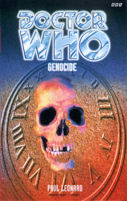

|
Genocide
|
BASIC PLOT DOCTOR COMPANIONS MATERIALISATION CIRCUIT Pg 139 The Kilgai Gorge, in what will one day be Tanzania, 2,569,878BC. Pg 184 The same place, but now in roughly 3,630,000BC Pg 262 Having hung around for 1.07 million years, the TARDIS proceeds to go back to where it started, in roughly 3,630,000BC. Pg 273 It must be on Tractis, some time in the late twenty-ninth or early thirieth century, but we don't see it appear. Pg 275 Before going to Tractis, the Doctor and Sam returned to 2,569,878BC to give the Habilines the antidote to Hynes' virus. PREPARATORY READING CONTINUITY REFERENCES Pg 28 "They seemed to be the Doctor's favourite garb: he claimed he'd picked them up on Savile Row in 1892, but Sam had seen the label on the jacket. Party Funtime of San Fransisco, California, USA." He picked his clothes up in the Telemovie, and probably still hasn't paid for them. The "many clocks of the console room", as we saw in the Telemovie, get a name-check. Pg 29 "Hmm. Yes. I meant the Venerable Bede. I think there was some kind of editorial problem. I'll have to speak to Oscar about it. He knows everybody." The Doctor claims to have shared a salmon he caught in the River Fleet with the Venerable Bede in The Talons of Weng-Chiang. Oscar is Oscar Wilde. Pg 30 "This is London, first of January 2108, the opening day of the Winter sales. I've been here before, bought some wings. A long time ago." Speed of Flight. Pg 53 "Sam hesitated. Then she looked the Doctor in the eye, and said 'Eight-point-five.' The Doctor jumped back as if she'd hit him. 'What?'" The Doctor's reaction to the number 8.5 is quite extreme and rather odd. Since there is some speculation that the post-Ancestor Cell Doctor could be considered Doctor number 8.5; maybe it's a response to this! Whatever, it's still extremely strange. "The Tractites are hardly Zygons, are they? Or those stupid Daleks you go on about." The Bodysnatchers, and confirmation that the Doctor's only been talking about Daleks when she mentions them in Vampire Science, and she hasn't actually met them yet. One is forced to wonder, given that Sam's entire frame of reference to baddies appears to be vampires, Zygons and the Doctor chattering on about the Daleks, exactly what she and the Doctor did do between The Eight Doctors and Vampire Science that caused her to go through three pairs of 'sneakers'. A lot of working out in the gym? Pgs 58-59 "'What's the goddamn e-mail address for this United Nations Intelligence force?' she asked after a while. 'I can't find it anywhere on the net.'" Which is interesting as, in The Paradise of Death they were in the phone-book! Presumably, security has tightened up since then. Pg 59 "When she did, memories flooded back: the cottage on the green hillside in Wales, the protest marches with Cliff and Jo." The cottage is, presumably the Nut Hutch, from The Green Death. Pg 69 "There was an Earth Reptile called Morkal, or Menarc, or something like that." 'Earth Reptile' is the PC term for Silurians. The guy turns out to be called Menarc, but it's interesting to note the similarity for the name 'Morkal' here to that of Imorkal, who appeared in Blood Heat and Eternity Weeps. Pg 74 In Jo's house "there was even a pair of white moon boots, thick with dust, stuffed into the narrow gap between the wardrobe and the wall." This may be an oblique reference to the title of Jon Pertwee's autobiography, which was Moon Boots and Dinner Suits. Pg 79 Very brief reference to Daleks. Pg 91 "'- though that's always seemed paradoxical to me. "I'm my own grandpa." You know.'" Ooh, a grandfather paradox. That sounds familiar. We'll see more of this in Alien Bodies. Pg 97 "I'll take it up with Brigadier Bambera ASAP." From Battlefield and Head Games. "A galaxy long, long ago and far, far away." Do I really need to tell you from which famous series of sci-fi movies this particular quote is taken from? Pg 99 "He's like a machine, thought Jo. She felt a chill inside her despite the dry African heat. She wondered if she was walking into a trap. She'd always been good at that." Too many occasions to count! Pg 102 "Rowenna remembered Jo, the stories of Autons, Axons and Daleks." Terror of the Autons, The Claws of Axos, Day of the Daleks and Planet of the Daleks. One wonders if Jo ever signed the Official Secrets Act. Presumably not... Pg 117 Another reference to the Zygons of The Bodysnatchers. Pg 118 "No drugs, no wars, no starving millions, no smoggy monoculture destined to get slowly worse and worse for the next thousand or two years and then - if the Doctor was to be believed - simply cease to exist." This latter presumably refers to the solar flare activity that necessitated the building of The Ark in Space. But see Continuity Cock-Ups. , although around the year 4000 seems very early. It's not the Ravolox removal of Earth from The Trial of a Time Lord, as The Eight Doctors made clear that that has now retroactively never happened. Pg 119 "The Doctor and I could just go back in time and stop the Tractites from ever coming here. Then the place might fill up with - oh, I don't know. Talking giraffes. Insectoids. Perhaps even bipeds, like us." It's probably a coincidence, but in Cold Fusion, the Solar System in the Ferutu universe was inhabited by insectoid creatures. Pg 121 "Kitig took another step, another, then seemed to vanish through the door, even though it was far too small for him to pass through." The TARDIS doors appear to still be set up as they were at the end of The Bodysnatchers. See also Continuity Cock-Ups. Pg 124 "'We're losing the eighties,' the Doctor was saying." For some Who fans, this is a dream come true! Pg 146 "Jo shrugged. 'Time travel isn't all that rare. The Doctor's lot try to keep it to themselves, but you can't really stop a technology from spreading.'" Jo appears to have learned a lot since she left the Doctor, but we can assume she draws this knowledge from conversations that they had sometime soon after The Three Doctors. Pg 147 "'If only the Doctor would turn up,' she muttered. 'But then, timely rescues never were his strong point.'" That's brutally unfair, actually. Pg 149 "'We've got to do something.' Jo felt the blood flow to her face. That had been her line, once, many years ago." She says this in Colony in Space. "She made herself remember the jungles of Spiridon, the Daleks cruising through the mist. Autons, faceless faces turning the corner - Sea Devils, Xarax, deadly parasitic Axons." Planet of the Daleks, Terror of the Autons, The Sea Devils, Dancing the Code, The Claws of Axos. Pg 151 "She walked on, saw the angular white shape of the secondary TARDIS console. A clean white floor. The smell of plastic." The secondary console room now looks like the primary one used to, instead of the wood-panelled one we saw in Season 14. This, rather wonderfully, confirms the speculation made in the guide to The Eight Doctors that, when the Doctor redecorated the main console room, he also changed the secondary one to look like the primary one used to, and it is in here that much of the action of The Eight Doctors takes place. Pg 158 "He pulled a thing that looked like a green rubber tennis ball from his pocket and fitted the hypo to it. It started to expand and contract slowly, almost as if it were breathing. 'May as well start working on a proper antidote while we're waiting,' said the Doctor." This rather convenient device is very similar to something that the Doctor used in The Face of Evil. Pg 160 "He'd known it as soon as the Doctor had arrived. Despite his weird nineteenth-century costume, he had the air of a man from the Golden Age." Hynes' thought-processes are getting a little bit all over the place: it's not clear whether he means the Golden Age of 1997, or a metaphorical Golden Age. Operation Golden Age was, of course, the plan the last time it was decided to wipe man from the face of the Earth and start again, when they tried it in Invasion of the Dinosaurs, and there is a lot of similarity between what was being tried then and what Hynes is trying to do now. Pg 181 "'Wait!' If these things had any kind of language, there was a chance that the TARDIS translation system would work with them." Sam seems to be aware of how the TARDIS gets into her head, so presumably the Doctor has told her. This would square with the fact that he tells Rose about it in The End of the World, but it does mean that he won't have that vital clue if either Sam or Rose are ever hypnotised and start asking about how it works (see The Masque of Mandragora). Pg 211 "No. Wait. They won't hurt us if we - ow!" This is a glorious subversion of something that the Doctor has said far too many times to list here. Pg 222 One of the nicest subtle resonances in all the books anywhere: "'I had become my enemy. Can you understand that?' The Doctor's eyes opened, but he said nothing." A brief and gentle reflection back to the beginning of the NAs, without ramming it down your throat. Pg 240 "At first she thought it was carved into the tree, perhaps by Jacob; then she realised that it was in the rock behind the tree. Letters. Words. Each one must be six feet high. SAM - THE TA." The words carved into the rocks as a message by Kitig owe something of a debt to the Amarna graffito in Set Piece, by which Ace sent a message forward in time hundreds of years to Benny and the Doctor. Pg 245 "'It [the TARDIS] has to be here!' she said. 'It's obvious! Otherwise we'd never have been able to understand Axeman!'" And this, Sam's realisation that the TARDIS is still translating for her, is identical to Ace's similar realisation in, once again, Set Piece. Pg 250 "'Come on! I can't leave you! They'll kill you!' Vampires, Zygons, hyenas, wolves..." Once again, this refers back to Vampire Science and The Bodysnatchers and further suggests that Sam had little or no experience of life with the Doctor before Vampire Science. Pg 258 "The TARDIS had completely changed. The time rotor was recognisable, but the rest was a jumble of dark rugs brass surfaces, and an incongruous VW Beetle parked by the edge of a dark Persian carpet." The VW Beetle first appeared in Vampire Science, and is around for the next twenty books or so. Pg 260 The display reads "HUMANIAN ERA: 2,569,878BC" which is consistent with the display in the Telemovie. Pg 265 "Sam put her thumb over the button, and was going to shout a warning, a threat, a simple word 'Halt' - but there was no time to shout, no time to give the alien fair warning, she just had to - Fire - The Tractite exploded." Sam carries the guilt about having killed a living being around with her, and it colours her actions in some of the subsequent books in the series. Pg 273 "In the middle of the Imperial Throne, on cushions of velvet and satin and force and air, sat the tiny, wrinkled husk of a woman. The Empress." It can be assumed that this is the same Empress who we meet in So Vile a Sin, albeit earlier in her timeline, before she is completely subsumed by the computer and killed by the Doctor. "She wasn't a subject of this woman. She didn't care what everyone else was doing. The humans, the Earth Reptiles, Draconians, Ice Warriors, Zygons, GorEntelech, even the Tractites, all knelt around her." Doctor Who and the Silurians, Frontier in Space, The Ice Warriors et al, Terror of the Zygons, unknown. Pg 274 "'You know who she reminds me of?' whispered the Doctor. Sam shrugged. 'Old friend of mine. Name of Davros. He used to make decrees as well, and it didn't do him much good either.' 'Never met him,' said Sam. 'I hope you don't.'" This prefigures the next book, War of the Daleks, in which she does. OLD FRIENDS AND OLD ENEMIES NEW FRIENDS AND NEW ENEMIES A bunch of people who think they can save the planet by writing bad poetry make a brief, yet strangely unwelcome, appearance. The Tractite Gavril, who utterly vanishes from the plot on Pg 114 and is never heard of again. Interestingly, this means that there's a random - and probably quite lonely - Tractite, wandering around the Kilgai gorge even unto this day, not entirely sure why humanity hasn't ceased to exist. An Earth Reptile called Menarc makes a fleeting appearance. Matthew Jones, son of Jo and Cliff, makes a fairly fleeting appearance as well. A UNIT guard. Chorus of Homo Habilis. Oh, yes, and the Empress of the Earth Empire makes a cameo appearance.
CONTINUITY COCK-UPS PLUGGING THE HOLES [Fan-wank theorizing of how to fix continuity cock-ups] FEATURED ALIEN RACES It's not an alien race as such, but, back in the distant past, we come across Australopithecus and Homo Habilis, both precursors of modern man. FEATURED LOCATIONS Pg 1 A village in prehistoric times (the existence of a copper axe suggests somewhere between 8000BC and 3000BC), presumably in Tanzania, Africa. Pg 10 A quick time travel backwards to some time - it's not at all clear - but presumably the same area. Pg 11 And again, this time to the time when the Paratractis colony was founded: roughly 3,630,000BC. Pg 15 The framing sequences take place in the buildings of the first Paratractis colony, 3,630,000. Pg 17 Wray Park, near Los Angeles, presumably 1997. Pg 30 Paratractis (alternate Earth), January 1st, 2108 Pg 39 The Kilgai Gorge, Tanzania, presumably 1997. Interestingly, and weirdly, the Kilgai Gorge does not appear to exist on Earth - Kigali is the capital of Rwanda and there is a gorge nearby - the Olduvai gorge - but not Kilgai. Is this a misprint? If so, it's consistent throughout the book. Why choose somewhere that doesn't exist, when everywhere else in the book (on Earth) does? Weird. Pg 49 The city of Afarnis, Paratractis, 2108. Pg 67 Mauvril's narrative is set on Tractis when the Empire came, which we can extrapolate out to being sometime in the late twenty-ninth or early thirtieth century. Pg 73 Jo's house is in Hackney, again, one presumes, in 1997. Pg 116 The tree travels, with Jo, Rowenna, Julie and Hynes, to 2,569,878BC (confirmed on Pg 260). Pg 135 The bulk of the action now shifts to Tanzania, 2,569,878BC. Pg 184 The Doctor and Kitig go back further, to roughly 3,630,000BC, but the same basic location - which is currently the site of the first Paratractis colony, known as Quan-Nafarnis. Pg 225 Six days have passed for Sam and Jo, who are still in 2,569,878BC Pg 231 Meanwhile, several weeks have passed for the Doctor and Kitig, back in 3,630,000BC. Pg 273 The Imperial Throne, currently located on Tractis, some weeks (months? a couple of years?) after the Earth Empire invaded. The Doctor and Sam observe from the Baron's Residence. Pg 277 We return to Kitig at the end of his life, which could be 60 years later or 600, not knowing what an average Tractite lifespan is. Pg 278 Using the Time Tree, Kitig then flashes back through a whole series of time periods, the last one being the formation of the solar system. IN SUMMARY - Anthony Wilson |
|
 |